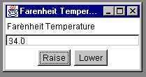
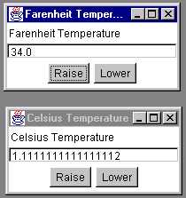
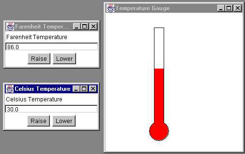
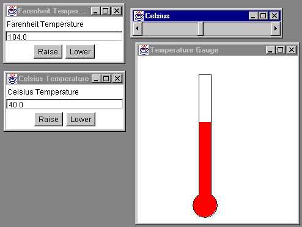

The Model View Controller pattern was invented in a Smalltalk context for decoupling the graphical interface of an application from the code that actually does the work. It turned out to be an very important idea that affected how much Smalltalk code was built and is applicable to other object-oriented languages as well.
In MVC the model is the code that carries out some task. It is built with no necessary concern for how it will "look and feel" when presented to the user. It has a purely functional interface, meaning that it has a set of public functions that can be used to achieve all of its functionality. Some of the functions are query methods that permit a "user" to get information about the current state of the model. Others are mutator methods that permit the state to be modified.
However, a model must be able to "register" views and it must be able to "notify" all of its registered views when any of its functions cause its state to be changed.
In Java a Model consists of one or more classes that extend the class java.util.Observable. This superclass will provide the register/notify infrastructure needed to support a set of views.
A model in MVC can have several views. Two examples are the rows and columns view of a spreadsheet and the pie chart view of some column in the same spreadsheet. A view provides graphical user interface (GUI) components for a model. It gets the values that it displays by querying the model of which it is a view.
When a user manipulates a view of a model, the view informs a controller of the desired change.
In Java the views are built of AWT or SWING components. However, views must implement the java.util.Observer interface.
Views in MVC are associated with controllers that update the model as necessary when a user interacts with an associated view. The controller can call mutator methods of the model to get it to update its state. Of course, then the model will notify ALL registered views that a change has been made and so they will update what they display to the user as appropriate.
In Java the controllers are the listeners in the Java event structure.
First you write a Model that extends java.util.Observable. You give your class accessors to get informtion about its current state and you write mutators to update the state. Each mutator should call setChanged() and one or the other of notifyObsvers() after it has actually changed the state. NotifyObservers will send an update message to each registered observer (View). There are versions of notifyObservers that let you pass additional information about the change as well.
Then you can create one or more views. Each view must implement the java.util.Observer interface and hence implement the update method. The Object in the second parameter will be used to receive additional information if passed.
interface Observer
{ void update(Observable t, Object o);
}
The View should implement the update method by querying the model (actually the Observable t) for the changes it needs and then make appropriate changes to the view itself.
The View also needs to register with the Model it wishes to observe by sending the model the addObserver message. The Model will remember all registered views so that it can notify (update) them later.
The reason that a Model has to extend java.util.Observable is that the Observable class provides all of the register/notify infrastructure needed by a model, so you don't have to build any of this and can concentrate on the functionality of your application.
A model can have several views. MVC was created specifically to permit this. Also, a view can register with several models and get updates from each of them.
It isn't necessary to build your Model so that it is a single Observable. Instead, several parts of the model can be separately Observable, each part with its own Observers.
Here is a model that is actually too simple to really be built as a class. It encapsulates the notion of a temperature in either Farenheit or Celsius units. When we create a temperature object it is at the freezing point of water but we can ask for its value in either type of unit and we can likewise set its value using either kind of unit. Notice that there are no GUI elements here, but there is some infrastructure, namely the setChanged and notifyObserver calls in the mutators.
public class TemperatureModel extends java.util.Observable
{ public double getF(){return temperatureF;}
public double getC(){return (temperatureF - 32.0) * 5.0 / 9.0;}
public void setF(double tempF)
{ temperatureF = tempF;
setChanged();
notifyObservers();
}
public void setC(double tempC)
{ temperatureF = tempC*9.0/5.0 + 32.0;
setChanged();
notifyObservers();
}
private double temperatureF = 32.0;
}
Not that it is especially interesting, but you can set a Farenheit temperature and then get the equivalent Celsius temperature. Thus this acts as a temperature converter as well as a temperature.
Here is a simple GUI for this model.We want a simple textual view of the temperature along with two buttons, one to increase and the other to decrease the temperature by one degree. The user can also put a number into the text field and hit the "Enter" key. We can actually have two different GUIs with these properties, one for Farenheit and the other for Celsius temperatures. Each one alone will be pretty boring since when we hit the Raise button the number in the view just increases by one.

It gets interesting, though, if we have two different views, one for Farenheit and the other for Celsius, simultaneously attached to the model. Then, when you manipulate either of them, the other is also automatically updated. Here is an example. I've clicked Raise on the Farenheit view a couple of times. It is important to note that these are separate GUIs. Also, both are connected to the same model.

Since these two GUIs are so similar, they are built as subclasses of a general TemperatureGUI class. This has all of the functionality, but has no listeners for its buttons and field. It also doesn't implement the required update method of the Observer class. It is therefore abstract. These will all be supplied by subclasses.
Note the key statement below that connects this view to the model.
abstract class TemperatureGUI implements java.util.Observer
{ TemperatureGUI(String label, TemperatureModel model, int h, int v)
{ this.label = label;
this.model = model;
temperatureFrame = new Frame(label);
temperatureFrame.add("North", new Label(label));
temperatureFrame.add("Center", display);
Panel buttons = new Panel();
buttons.add(upButton);
buttons.add(downButton);
temperatureFrame.add("South", buttons);
temperatureFrame.addWindowListener(new CloseListener());
model.addObserver(this); // Connect the View to the Model
temperatureFrame.setSize(200,100);
temperatureFrame.setLocation(h, v);
temperatureFrame.setVisible(true);
}
public void setDisplay(String s){ display.setText(s);}
public double getDisplay()
{ double result = 0.0;
try
{ result = Double.valueOf(display.getText()).doubleValue();
}
catch (NumberFormatException e){}
return result;
}
public void addDisplayListener(ActionListener a){ display.addActionListener(a);}
public void addUpListener(ActionListener a){ upButton.addActionListener(a);}
public void addDownListener(ActionListener a){ downButton.addActionListener(a);}
protected TemperatureModel model(){return model;}
private String label;
private TemperatureModel model;
private Frame temperatureFrame;
private TextField display = new TextField();
private Button upButton = new Button("Raise");
private Button downButton = new Button("Lower");
public static class CloseListener extends WindowAdapter
{ public void windowClosing(WindowEvent e)
{ e.getWindow().setVisible(false);
System.exit(0);
}
}
}
Note that it does have methods for adding listeners to the three components.
The Farenheit GUI follows. It defines listeners and adds them to its components using the addlistener methods defined in the superclass. It also supplies the update method. The Celsius one is similar. Its only difference is that it uses getC and setC instead of getF and setF.
The key to this is the update method of the Observer interface. This is called by the model when it executes the notifyObservers method. Each registered observer is sent an update message. The view responds by querying the model for changed information and then updating itself accordingly. Here we get the new temperature in the desired units and set the display accordingly.
The action listeners also update the model by calling its mutators. This lets the user, who sees the view, manipulate the model itself. Note, however, that the listeners don't update the view's display. Instead they wait for the update message that they know will be sent by the newly changed model.
class FarenheitGUI extends TemperatureGUI
{ public FarenheitGUI(TemperatureModel model, int h, int v)
{ super("Farenheit Temperature", model, h, v);
setDisplay(""+model.getF());
addUpListener(new UpListener());
addDownListener(new DownListener());
addDisplayListener(new DisplayListener());
}
public void update(Observable t, Object o) // Called from the Model
{ setDisplay("" + model().getF());
}
class UpListener implements ActionListener
{ public void actionPerformed(ActionEvent e)
{ model().setF(model().getF() + 1.0);
}
}
class DownListener implements ActionListener
{ public void actionPerformed(ActionEvent e)
{ model().setF(model().getF() - 1.0);
}
}
class DisplayListener implements ActionListener
{ public void actionPerformed(ActionEvent e)
{ double value = getDisplay();
model().setF(value);
}
}
}
It is important to notice that the view does not hold any information internally about the current temperature in the model. This way it is never "out of date." It can always get the current temperature by querying the model.
Here is a class that can be used to create the two views shown above.
public class MVCTempConvert
{ public static void main(String args[])
{ TemperatureModel temperature = new TemperatureModel();
new FarenheitGUI(temperature, 100, 100);
new CelsiusGUI(temperature,100, 250);
}
}
We can create an entirely different view. Here is one that looks like a temperature gauge. This one has no controller and so is completely passive. An ambitious student might add mouse actions to let us drag the top of the red bar up and down. We show this GUI along with one each of the ones defined above. When the user manipulates either of the text views the model is changed and all three views are notified and so update what we see on the screen. As you click either of the Lower buttons the red bar gets shorter, but by different amounts for the two Lower buttons.

Again, providing this view requires no modification to the Model code or to other views.
class TemperatureCanvas extends Canvas
{ public TemperatureCanvas(TemperatureGauge farenheit)
{ _farenheit = farenheit;
}
public void paint(Graphics g)
{ g.setColor(Color.black);
g.drawRect(left,top, width, height);
g.setColor(Color.red);
g.fillOval(left-width/2, top+height-width/3,width*2, width*2);
g.setColor(Color.black);
g.drawOval(left-width/2, top+height-width/3,width*2, width*2);
g.setColor(Color.white);
g.fillRect(left+1,top+1, width-1, height-1);
g.setColor(Color.red);
long redtop = height*(_farenheit.get()-_farenheit.getMax())/(_farenheit.getMin()-_farenheit.getMax());
g.fillRect(left+1, top + (int)redtop, width-1, height-(int)redtop);
}
private TemperatureGauge _farenheit;
private static final int width = 20;
private static final int top = 20;
private static final int left = 100;
private static final int right = 250;
private static final int height = 200;
}
class TemperatureGauge
{ public TemperatureGauge(int min, int max){ Min = min; Max = max; }
public void set(int level) { current = level; }
public int get(){return current;}
public int getMax(){return Max;}
public int getMin(){return Min;}
private int Max, Min, current;
}
public class GraphGUI extends Frame implements Observer
{ public GraphGUI(TemperatureModel model, int h, int v)
{ super("Temperature Gauge");
this.model = model;
_farenheit = new TemperatureGauge(-200, 300);
Panel Top = new Panel();
add("North", Top);
gauges = new TemperatureCanvas(_farenheit);
gauges.setSize(500,280);
add("Center", gauges); setSize(280, 280);
setLocation(h,v);
setVisible(true);
model.addObserver(this); // Connect to the model
}
public void update(Observable obs, Object o) // Respond to changes
{ repaint();
}
public void paint(Graphics g)
{ int farenheit = (int)model.getF(); // Use the current data to paint
_farenheit.set(farenheit);
gauges.repaint();
super.paint(g);
}
private TemperatureModel model;
private Canvas gauges;
private TemperatureGauge _farenheit;
}
Graham Perkins of DeMontfort University (Milton Keynes, GB) suggested a slider GUI for this application. Actually, he gave me one that was integrated into his own framework. I built this one more compatible with what is here.
A slider is just a java.awt.Scrollbar. We can connect it to our model as an observer and can use an AdjustmentListener to update the model itself. The slider can be manipulated by the user to change all the other views, and when any of the other views is used to manipulate the model, the slider moves automatically to the relative position along its scale.
public class SliderGUI implements Observer
{ public SliderGUI(TemperatureModel m, int h, int v)
{ m.addObserver(this); //Observe the temperature model
model = m;
sliderFrame.add(tempControl);
tempControl.addAdjustmentListener(new SlideListener());
sliderFrame.setSize(250,50);
sliderFrame.setLocation(h, v);
sliderFrame.setVisible(true);
sliderFrame.addWindowListener(new TemperatureGUI.CloseListener());
}
public void update(Observable t, Object o)
{ double temp = ((TemperatureModel)t).getC();
tempControl.setValue((int)temp); // Move the slider thumb
}
class SlideListener implements AdjustmentListener
{ public void adjustmentValueChanged(AdjustmentEvent e)
{ model.setC(tempControl.getValue());
}
}
private Scrollbar tempControl = new Scrollbar(Scrollbar.HORIZONTAL, 0, 10, -50, 160);
private TemperatureModel model = null;
private Frame sliderFrame = new Frame("Celsius");
}

Here we have dragged the thumb of the slider to the middle and all the views updated. Notice that this view gives no feedback other than the position of the thumb. Also notice the most important thing, that these views all interact, but make no reference to each other. They all work because they have registered with the underlying model and take updates from it when any of them modify the model.
I would not use the Temperature Model early in a course as it has no interest as an object in itself. To use Viera Proulx and Richard Rasala's terminology, it isn't an "Object that Matters." I would introduce it as a simple model later in the course when I want to introduce MVC and foucs on the complexities of that while having a trivially simple model to work with.
One sensible way to run a course is to avoid GUI stuff at the beginning and do it later in the term. It helps if you have developed several models in the beginning of the course that can be given GUIs later. If you give them complete functional interfaces you will be able to easily add GUIs using MVC. If you do this you will have a way to emphasize the clear separation between the application code and its GUI, since you use the model unaltered except for the notify calls. A calculator is a good example of this. A non-GUI calculator is interesting and emphasizes object-oriented concepts if correctly built. There are lots of objects and some of them are not singletons. The design is simple enough for first year students. And yet it benefits greatly from a GUI. It is also advantageous to build the model completely separately from the GUI both to emphasize the correct separation and to give the students a more manageable problem in each part.
The difference between the Farenheit GUI and the Celsisus GUI is so small that it is best handled with a Strategy Pattern. Then you only need to write one Temperature GUI class and specialize it with a Farenheit Strategy, etc. Here is an interface for the strategy and the Celsius Strategy itself. The strategy is used within the listeners. I leave the rest as an exercise. The slider GUI could benefit especially from using such a strategy, since then it could be used for other applications altogether unrelated to temperature.
interface ValueStrategy { public void set(double d); public double get(); }class CelsiusStrategy implements ValueStrategy { public CelsiusStrategy(TemperatureModel m) {model = m;} public void set(double d){model.setC(d);} public double get(){ return model.getC();} private TemperatureModel model; }
One can also note that the Java event structure is very similar to MVC. The listeners register with the components (addActionListener...) and are notified when the state of the component changes (button pushed). The structure of the Java Swing components is even more similar to MVC, since Swing was built with MVC in mind. Thus, teaching something like the above can be an important introduction to Swing.
The event structure here is discussed in Java Event Patterns.
The strategy pattern is disucssed in Strategy, Decorator, and Composite Patterns.
Here is a page with an Applet version of this code. You may be able to run it, depending on the capabilities of your browser.
Alternatively you might be able to save the above link (an html file) and the required mvc.jar file. You could then run it with the Appletviewer.
Here is another version in which you can create as many GUIs of each kind as you like.
Michael Suesserott from Germany corrected my spelling. Thanks. I was so careful to spell Farenheit and Celsius correctly that I didn't notice that I had spelled gauge as "guage." Oh well. Graham Perkins suggested the SliderGUI as noted above.
Last Updated: August 19, 2003